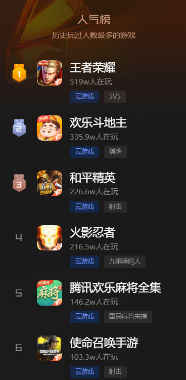
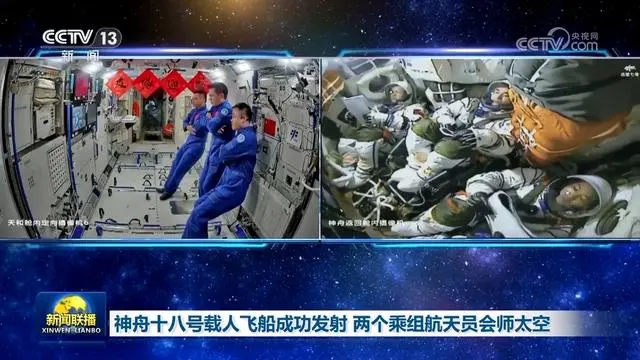
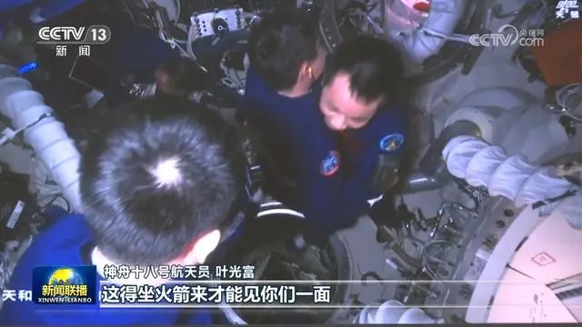
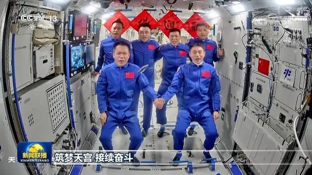

神舟十八号载人飞船成功发射 两个乘组航天员会师太空
央视网消息（新闻联播）：4月25日20时59分，搭载神舟十八号载人飞船的长征二号F遥十八运载火箭在酒泉卫星发射中心成功发射，叶光富、李聪、李广苏3名航天员顺利进入太空。4月26日3时32分，神舟十八号载人飞船与空间站组合体完成自主快速交会对接，两个乘组航天员会师太空。

约10分钟后，神舟十八号载人飞船与火箭成功分离，进入预定轨道，航天员乘组状态良好。神舟十七号3名航天员在空间站实时观看了神舟十八号发射的全过程。
4月26日3时32分，神舟十八号载人飞船成功对接于空间站天和核心舱径向端口，整个对接过程历时约6.5小时。随后，3名航天员开始从神舟十八号载人飞船进入空间站天和核心舱。

5时04分，在轨执行任务的神舟十七号航天员乘组顺利打开“家门”，欢迎远道而来的神舟十八号航天员乘组入驻“天宫”。

随后，两个航天员乘组拍下“全家福”，共同向牵挂他们的全国人民报平安。
后续，两个航天员乘组将在空间站进行在轨轮换。其间，6名航天员将共同在空间站工作生活约5天时间，完成各项既定工作。神舟十七号航天员乘组将于4月30日返回东风着陆场。
在空间站工作生活期间，神舟十八号航天员乘组将进行多次出舱活动，开展微重力基础物理、空间材料科学、空间生命科学、航天医学、航天技术等领域实（试）验与应用，完成空间站碎片防护加固装置安装，舱外载荷和舱外平台设备安装与回收等各项任务。